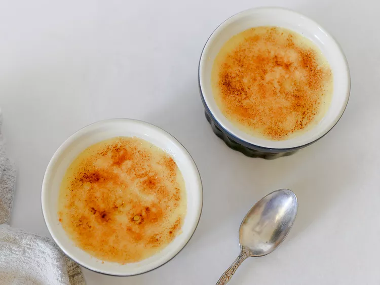

Vanilla Creme Brulee

A Sensational Dessert
This delicious Creme Brulee is made with eggs, cream, sugar and vanilla paste for a
more intense vanilla flavor. The caramelized sugar topping turns it into a
sensational dessert!
Vanilla Creme Brulee Ingredients
- 3 Large Egg Yolks
- 1/2 Cup Superfine Sugard
- 1 Teaspoon Pure Vanilla Bean Paste
- 1 Cup Heavy Whipping Cream
- 1 Tablespoon Superfine Sugar
How To Make Vanilla Creme Brulee
- Place egg yolks in a bowl; beat with an electric mixer on high speed until
eggs are thick
and light yellow, about 5 minutes. Gradually beat in 1/4 cup sugar
and vanilla bean paste.
- Pour cream into the top of a double boiler over simmering water and simmer until just
hot to the touch, about 3 minutes. Pour 1/2 of the warmed cream into the egg mixture,
a little at a time, whisking constantly so eggs do not curdle.
- Pour egg yolk-cream mixture into the remaining cream in the double boiler.
- Cook over medium heat, stirring continuously, until mixture thickens, 8 to 10 minutes. Do not let mixture boil.
- Pour custard into 4 small ramekins and refrigerate for a minimum of 2 hours, up to 24 hours.
- Sprinkle each crème brûlée with some of the remaining tablespoon of superfine sugar.
- Use a blowtorch to melt the sugar on top of the crème brûlée. It will crystallize as it hardens. Alternatively you can use the oven broiler, but be careful to not burn the sugar.
- Lightly tap the crystallized sugar with the back of a spoon to break it before eating.